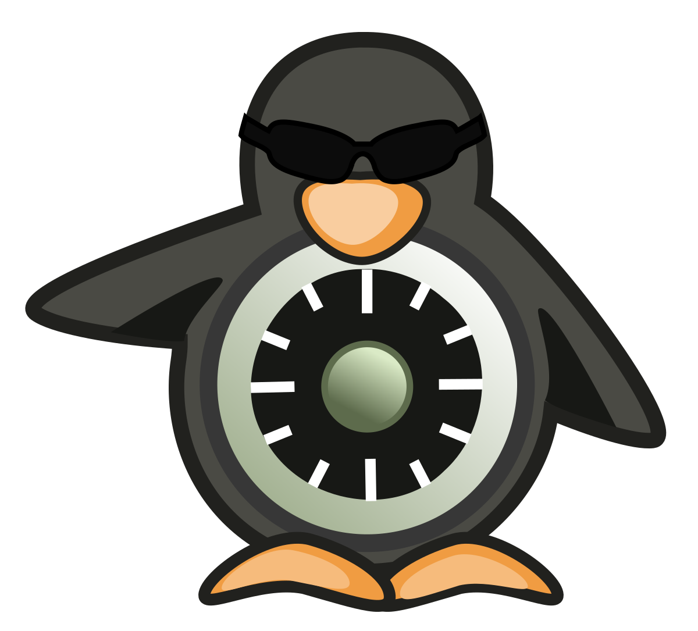

A segurança da informação é aquele conceito por trás da defesa dos dados, detalhes e afins para assegurar que eles estejam acessíveis somente aos seus responsáveis de direito ou as pessoas às quais foram enviados.
Por exemplo, imagine uma grande corporação multinacional, com projetos em várias frentes e participando de várias concorrências governamentais. É natural e saudável que esses dados sejam sigilosos, mas sempre existe o risco de uma ou outra informação vazar. Quando isso acontece, a perda pode ser irreparável.
E essas informações que, de uma forma ou de outra, vão parar nas mãos erradas, raramente chegam a esse destino indesejado sem a intervenção de um usuário final. Nem todo mundo percebe, mas um simples “encaminhar” no cliente de e-mail para a pessoa errada pode culminar no envio de dados restritos que possivelmente serão usados contra essa pessoa ou empresa. Nunca se sabe onde eles vão chegar.
Em uma empresa, a segurança da informação nada mais é do que as políticas, processos e métodos que devem ser empregados para que a circulação de dados e informações seja segura e controlada, evitando que pessoas indesejadas façam uso ou ao menos tenham acesso a essas informações.
Ter um departamento de TI, a tal Tecnologia da Informação, preparado para dar conta da segurança da informação é fundamental. Já existem ferramentas variadas que permitem evitar maiores problemas e garantir a integridade e a confidencialidade da informação, o que em última instância é o desejo primeiro das empresas.
A informação só estará segura quando usuários e profissionais de TI agirem em consonância, colocando em prática as melhores maneiras para evitar riscos futuros.
A informação só estará segura quando usuários e profissionais de TI agirem em consonância, colocando em prática as melhores maneiras para evitar riscos futuros.
Acima de tudo, segurança da informação diz respeito a como as pessoas usam as informações que chegam até elas. E não há dúvida quanto a isso: seja um e-mail particular ou um relatório sobre uma grande venda, nada pode escapar do ecossistema de proteção criado para aquela pessoa. Portanto, é bom ficar de olho.
A segurança da informação não está restrita apenas a dados empresariais. Mais que nunca, usuários comuns, que usam a internet apenas para conversar com amigos ou familiares pelas redes sociais, também devem tomar cuidado ao navegar na rede. A exposição de dados sensíveis — seja um nome completo, um documento ou mesmo qual o banco que usa — é meio caminho andado para fraudadores aplicarem golpes de roubo de identidade.